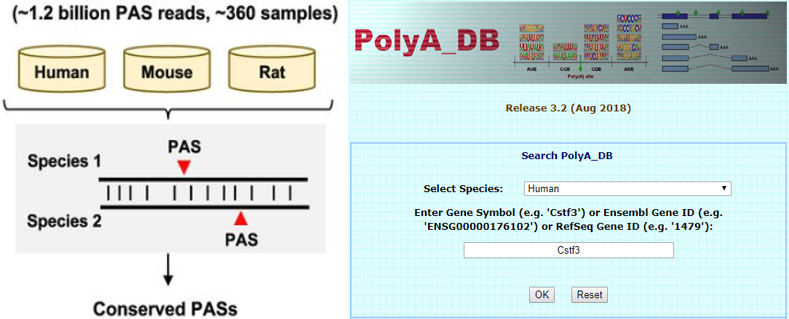
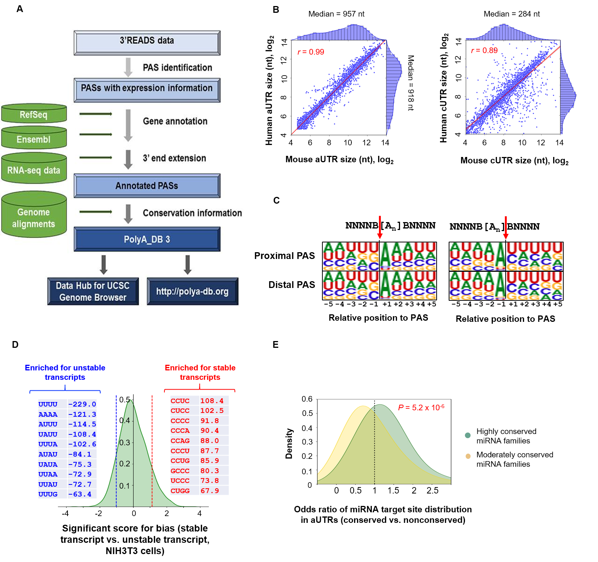

Project Overview
 In this project, I constructed a vertebrate PAS database, PolyA_DB 3. This database contains PAS identified in several vertebrates, including humans, mouse, rat and chicken, drawn from over 100 datasets. In additions, through systematic bioinformatics analysis, we present the first comprehensive view of conserved cleavage and polyadenylation events in mammals.
Representative publication
- Ruijia Wang, Dinghai Zheng, Ghassan Yehia, Bin Tian: A compendium of conserved cleavage and polyadenylation events in mammalian genes. Genome research 28.10 (2018): 1427-1441. Paper link
- Ruijia Wang, Ram Nambiar, Dinghai Zheng, Bin Tian: PolyA_DB 3 catalogs cleavage and polyadenylation sites identified by deep sequencing in multiple genomes. Nucleic acids research 46, no. D1 (2017): D315-D319. Paper link
Gallery

Figure. PolyA_DB 3 construction and genomic evolution analysis on mammal PAS.
(A) Schematic of PAS identification and presentation in PolyA_DB version 3.
(B) Correlation of aUTR length (left) or cUTR length (right) between human and mouse genes.
A total of 6706 orthologous genes with conserved 3′ UTR APA are included.
3′ UTRs are divided into aUTRs and cUTRs using the first conserved and last conserved PASs (mammal conserved).
Median length value for each species and Pearson correlation coefficient are indicated.
(C) Sequence motifs at the cleavage site, shown as sequence logos.
Two scenarios are considered, as illustrated above the logos.
(Left) Cleavage site is considered to be immediately after a non-A nucleoside (shown as B) and before an adenosine.
(Right) Cleavage site is considered to be immediately after an adenosine and before a B.
(D) Tetramers enriched for 3’UTRs of stable or unstable transcripts.
(E) Odds ratio of miRNA target site distribution between conserved and nonconserved aUTRs for highly conserved miRNA families and moderately conserved miRNA families. miRNA
conservation is defined by TargetScan (“Family Conservation” score = 1 for moderately conserved miRNAs, and = 2 for highly conserved ones).
Author: Ruijia Wang